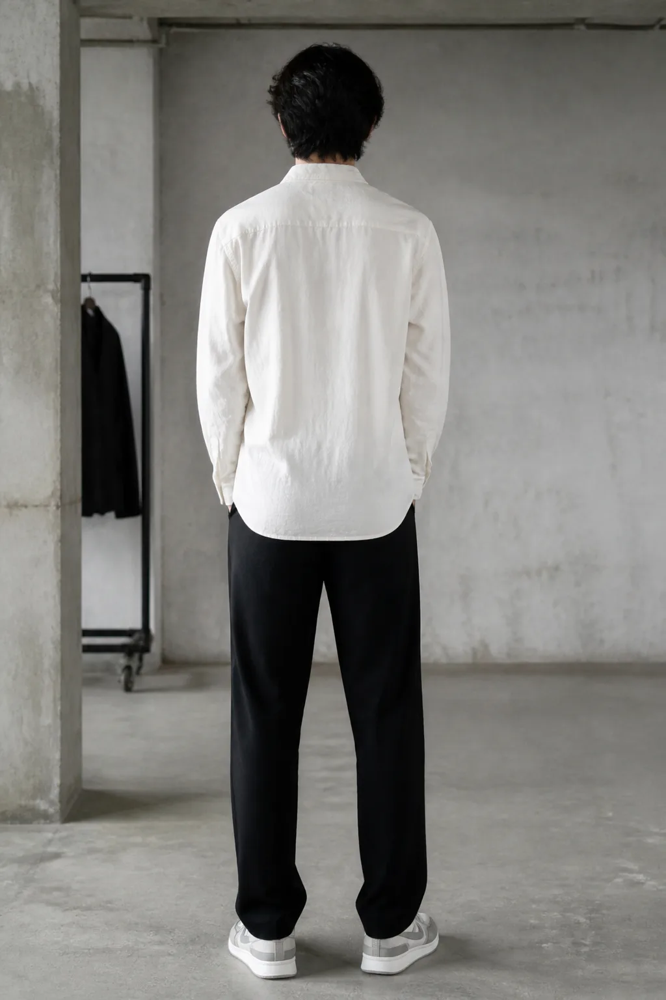
01 / Easy structureShirts & layers
Defined silhouettes that work on their own or become the starting point for a layered look. Pay attention to the cut, the collar and the way each piece sits.
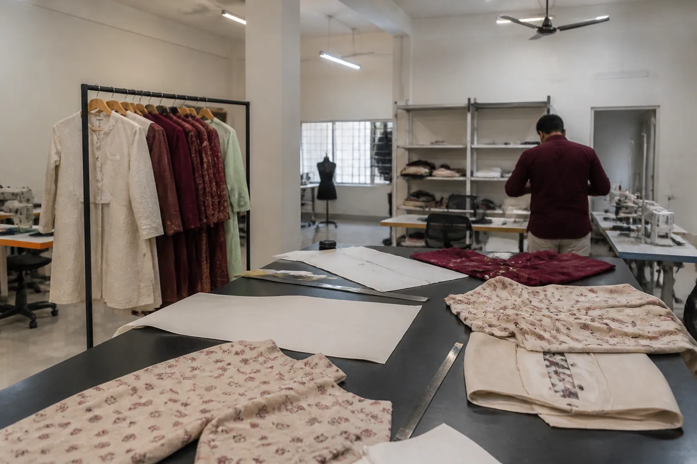
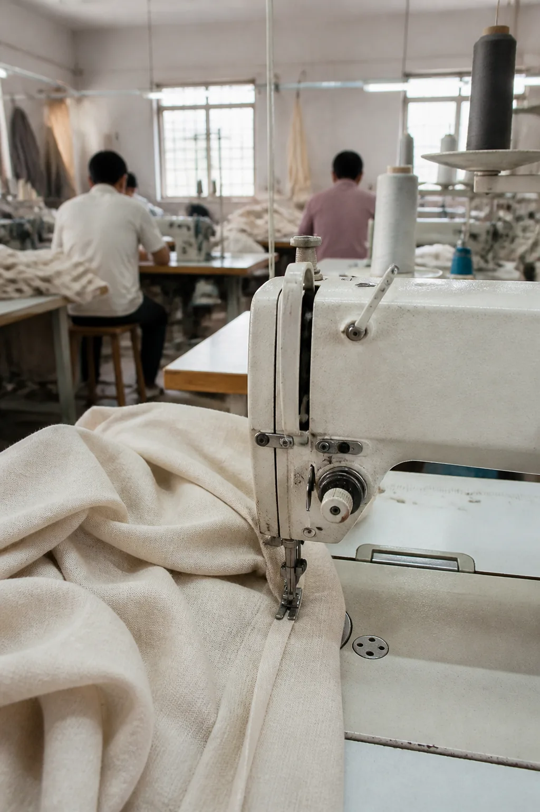
GW / 001A self-made clothing brand · Vijayawada
Considered apparel with a point of view. Girka World starts in Vijayawada and speaks to people who dress for themselves, everywhere in India.
self-made brand, built around true fashion.
Girka World is finding its own voice in Vijayawada, Andhra Pradesh. The idea is simple: clothing should feel like an expression of the person wearing it, not a uniform borrowed from everyone else.
Vijayawada → All over IndiaExplore the shapes, details and everyday possibilities behind the Girka World wardrobe.

01 / Easy structureDefined silhouettes that work on their own or become the starting point for a layered look. Pay attention to the cut, the collar and the way each piece sits.
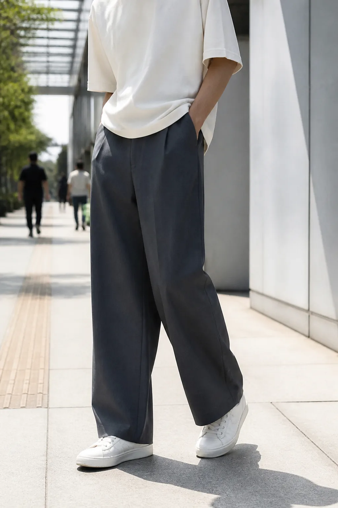
02 / Everyday movementComfortable shapes for long days and changing plans, made to pair easily with the pieces you already reach for.
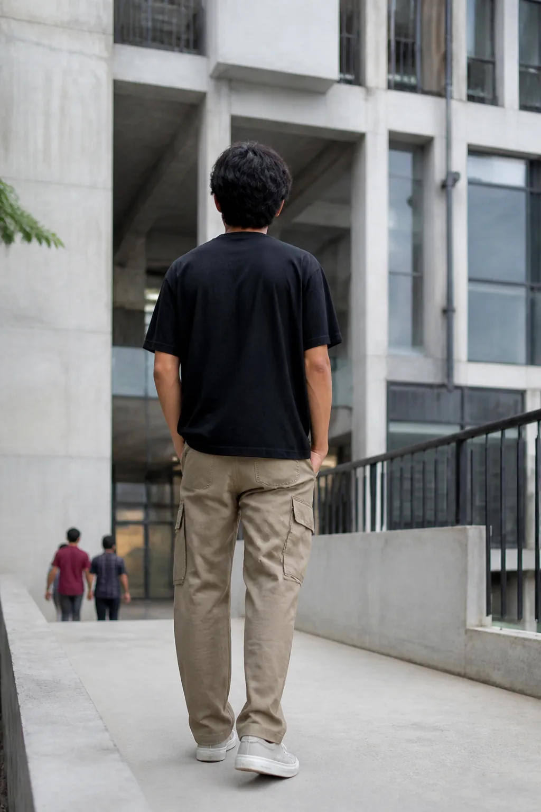
03 / Your point of viewPieces with presence for the days you want your outfit to do some of the talking. Wear them your way; there is no prescribed look.
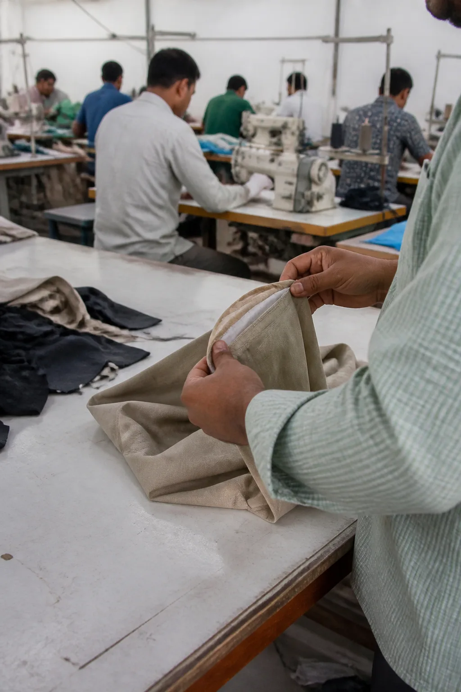
Girka World is a newly established, self-made brand from Vijayawada. We are starting with the thing that matters most to us: true fashion. That means paying attention to how a garment looks, how it feels in a real wardrobe and what it lets you say without saying a word.
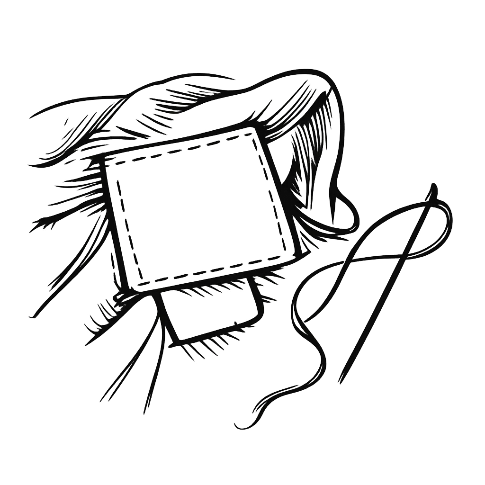
Shopping an emerging label should feel personal, not complicated. Take a closer look, tell us what caught your eye and ask the questions that help you choose well.
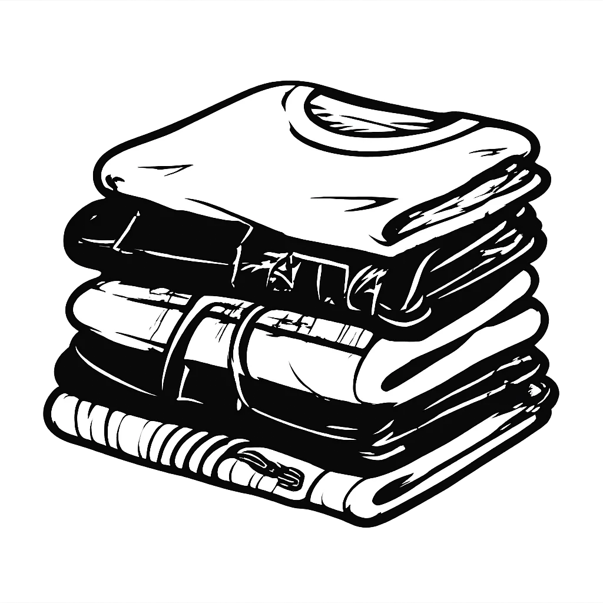
Look through the collection and notice the pieces you could see yourself wearing often. Start with silhouette, then consider the details.
Send us the style you are interested in along with your size or fit questions. We can discuss current options and help you understand the piece before you decide.
Once you know what suits you, we can share the next steps for getting a Girka World piece wherever you are in India.
A closer look at the lines, textures and styling that shape the world of Girka.
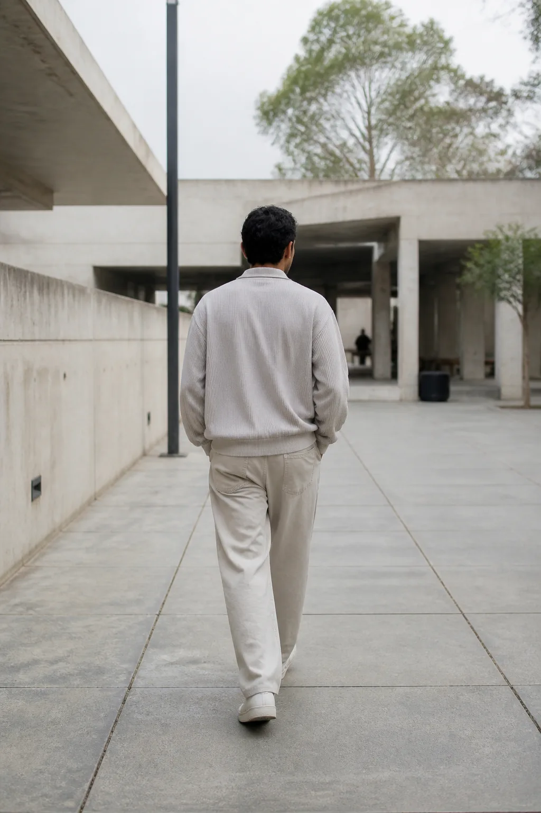
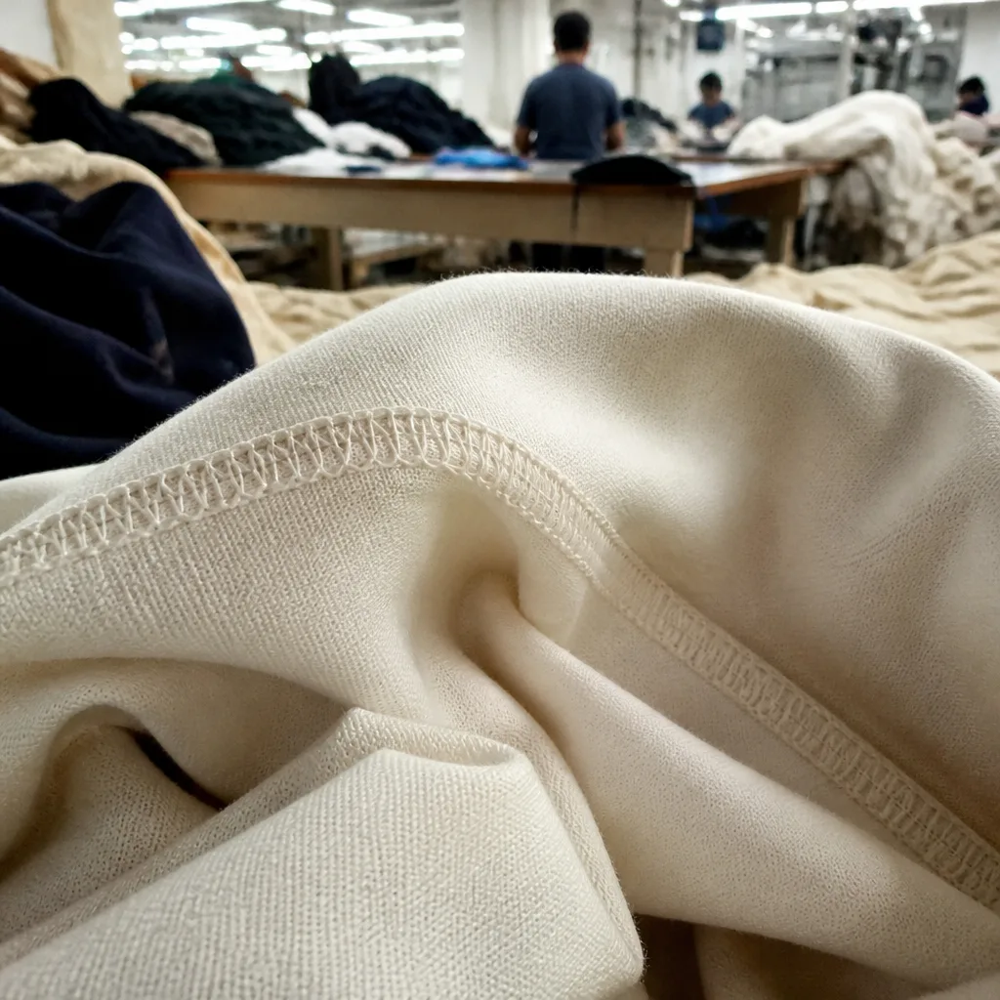
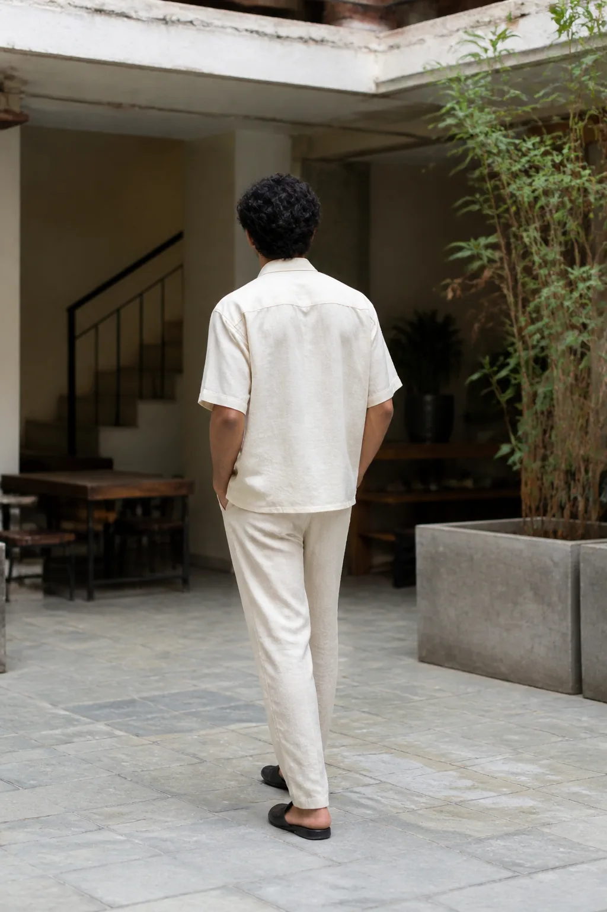
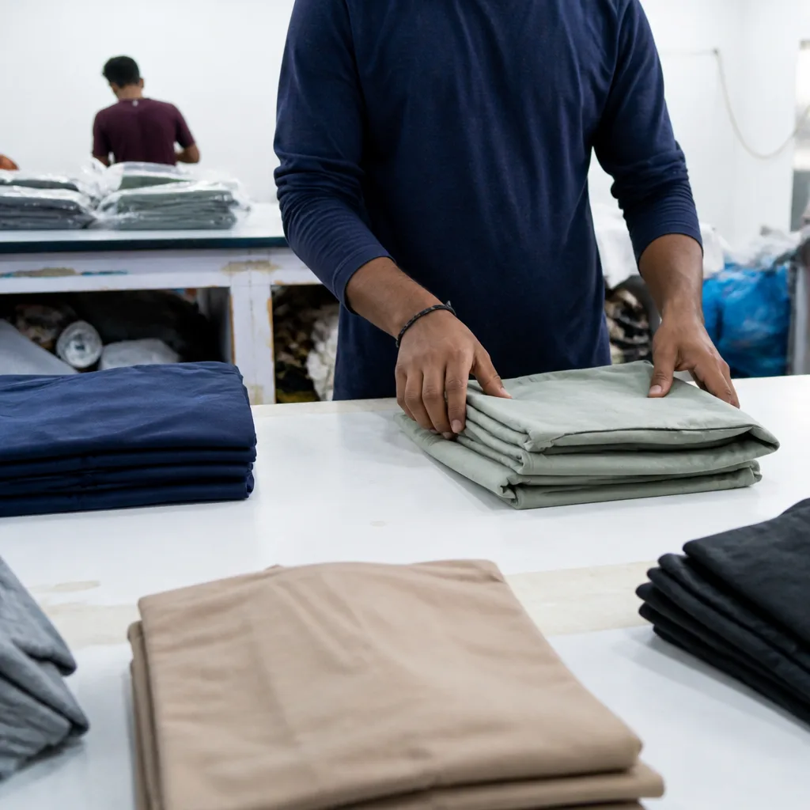
Tell us what you are looking for, ask about a piece or get help narrowing down your choice. Girka World is based in Vijayawada and welcomes enquiries from across India.
+91 63033 12455